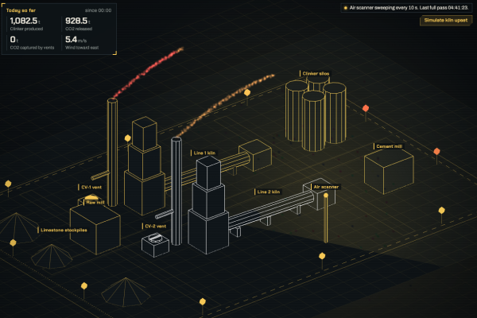
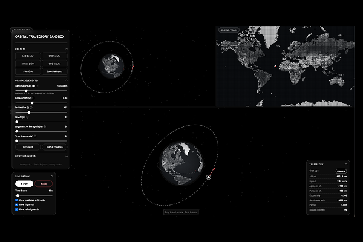
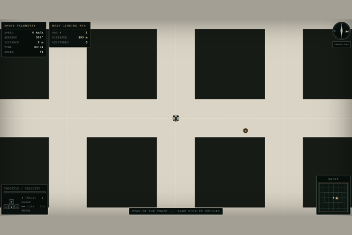
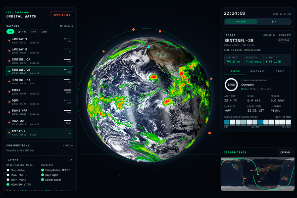

Halden Ridge Emission Console
An AI copilot that answers production and compliance questions from plant records while monitoring emissions.
Static screens lie. I use AI-assisted coding to move rapidly out of Figma and into the browser. These builds live directly on GitHub as functioning HTML, CSS, and JavaScript—stress-testing UI logic and interactions in real-world environments before a single engineering ticket is written.

An AI copilot that answers production and compliance questions from plant records while monitoring emissions.


An interactive 3D sandbox for exploring how orbital elements shape a satellite's trajectory in real time.

A 2D top-down drone flight simulator: navigate a procedurally generated city grid and land on target pads without crashing.

A 3D web application that tracks real-time satellite orbits and telemetry.
If you need to know whether an idea works before you commit engineering time to it, this is exactly the kind of thing I like building.
Get in touch